FutView Apple TV
Diseñada en Apple Tv, plataforma donde el principal objetivos son cambiar la forma en la que los usuarios acceden a los contenidos, pagando solo por lo que quieren ver, y la forma que los usuarios quieren ver el contenido, dejando este de ser lineal y aburrido y dándole al usuario el control de cómo quiere personalizar su visualización.
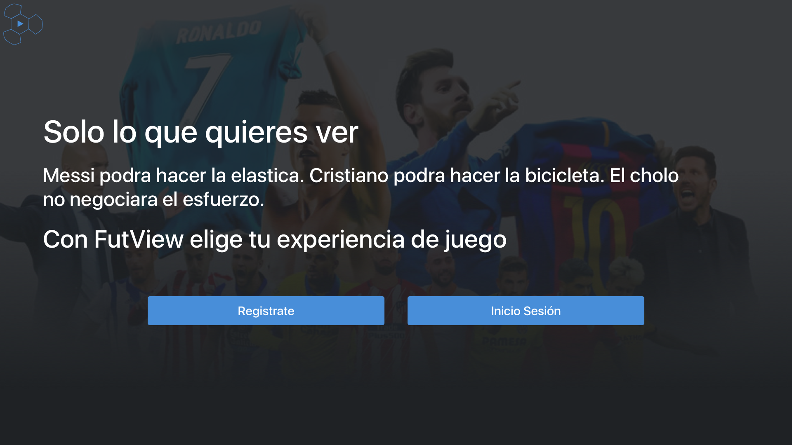
Proceso de registro, donde el usuario puede escoger entre las 3 modalidades de pago, avalado por el estudio del mercado por medio de entrevista y encuesta a los usuarios, donde se observó que la gran mayoría de los usuarios solo veían un partido a la semana (el de su equipo), otros, aparte de los partidos de su equipo veían algunos más a la semana, para ello la opción de 5 partidos al mes. Y no dejando de lado a los usuarios que les gusta ver todo encontramos la modalidad de temporada completa.
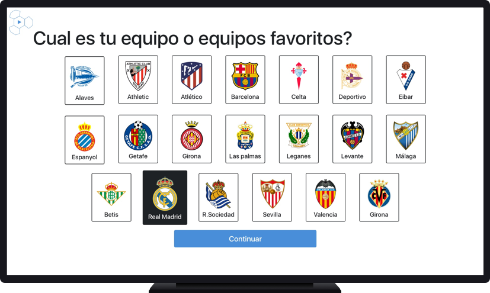
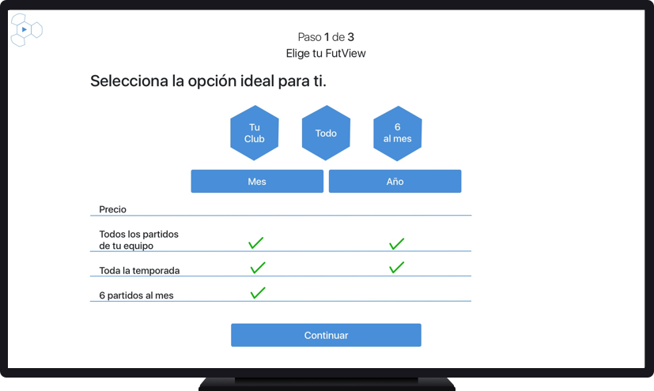
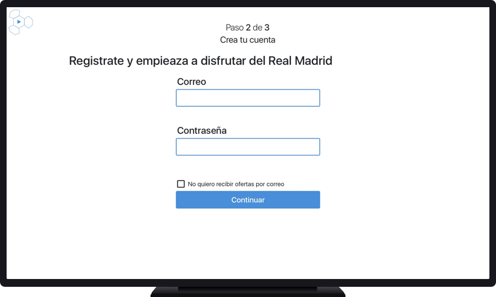
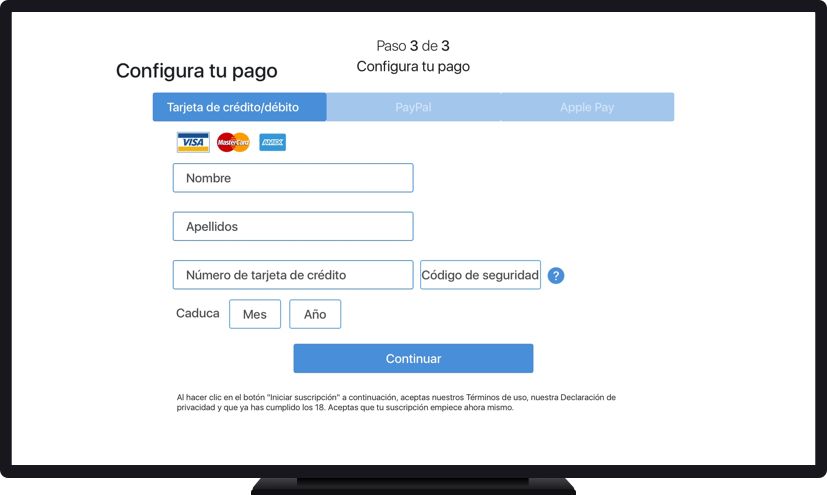
Notificaciones
Cada vez que ocurre algo importante en el partido u en otros el usuario recibe una notificación para poder acceder a ese contenido nuevo. La idea principal es que el usuario no pierda nunca de vista el partido principal y que siempre pueda volver a esta ventana de manera rápida y sencilla.
Otras visualizaciones
El usuario puede acceder a de manera rápida a la visualización del contenido desde otras cámaras y además también puede seguir los comentarios que van dejando más usuarios en las redes sociales. Todo ello dejando siempre el control al usuario y nunca de una manera intrusiva para el mismo.
Proceso de UX
Lean UX Canvas/Mind Map
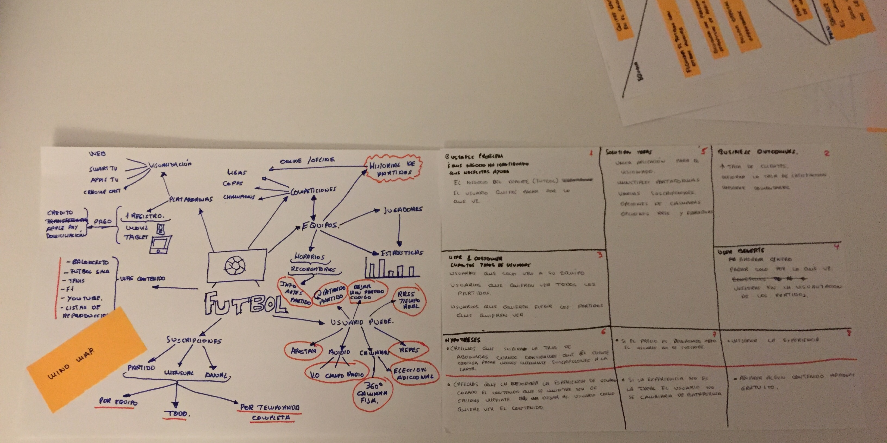
Users Persona/Empaty Map
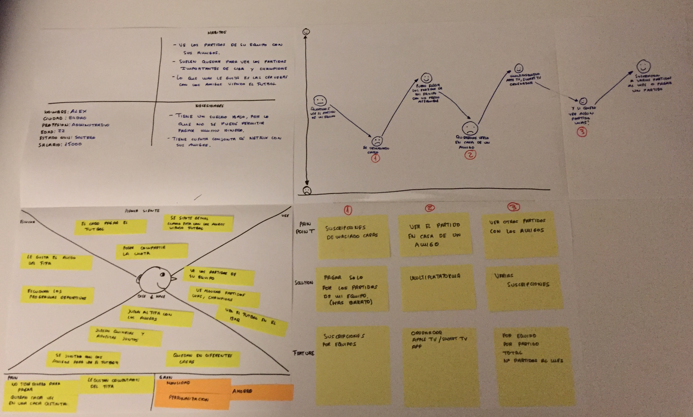
User Stories/User Journey
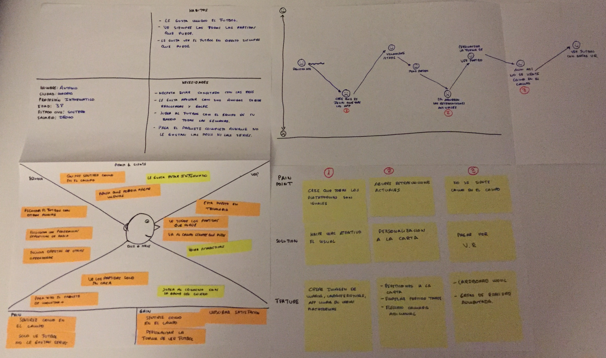
Hand Concept Sketches
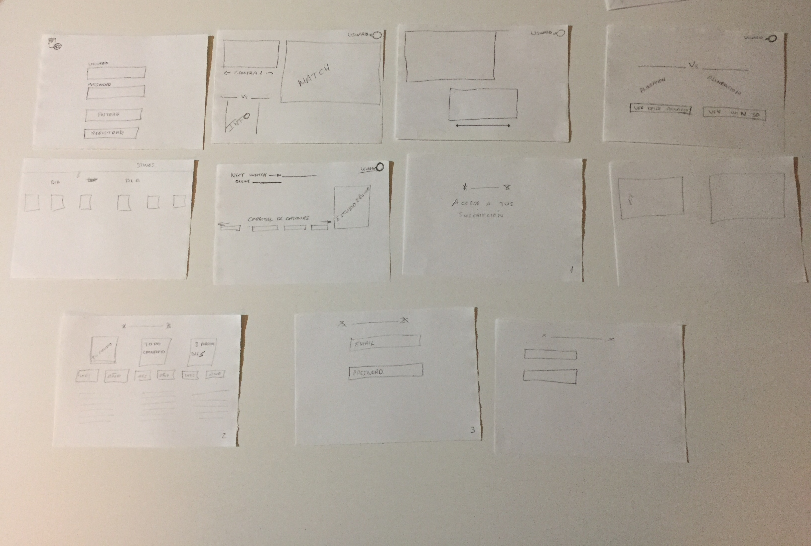
userflow
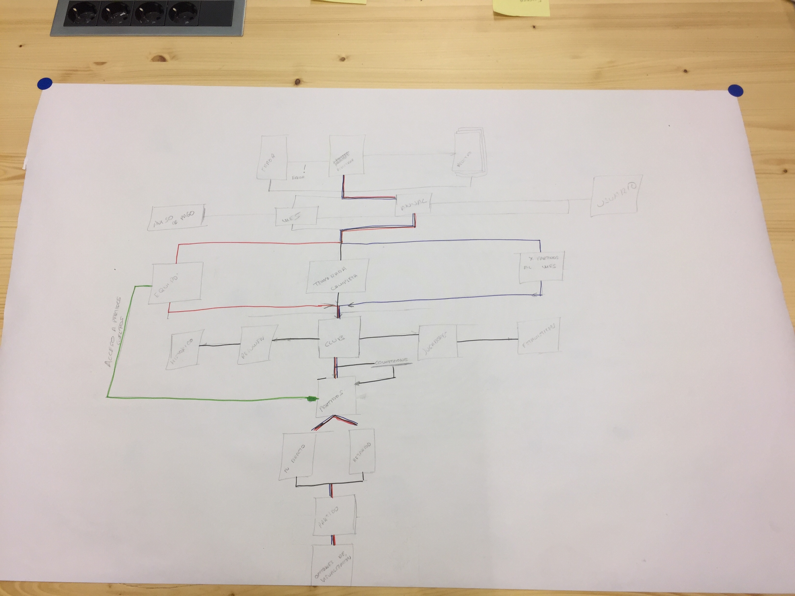
Affinity diagrams
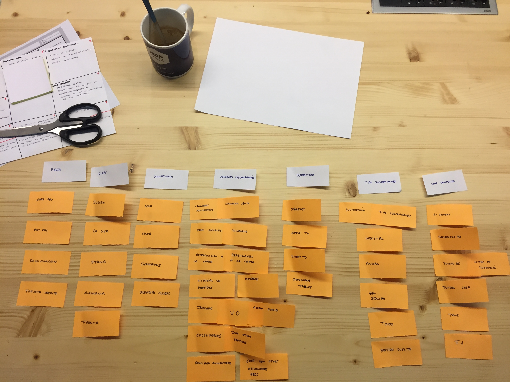
Card Sorting